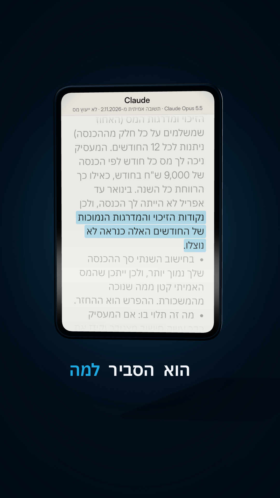

תלוש משכורת: החזר מס על 2020
עבדתם רק חלק משנת 2020? חל"ת, פיטורים, עבודה ראשונה, חזרה מחו"ל? יכול להיות שנוכה לכם יותר מדי מס. על 2020 אפשר לבקש החזר רק עד 31.12.2026. הנה השאלה מהריל, כדי ש-Claude יעזור לכם לבדוק.
איך משתמשים
- מעתיקים את השאלה (הכפתור למטה) ומשנים את הפרטים למצב שלכם: כמה חודשים עבדתם ב-2020, האם הייתה הכנסה אחרת (דמי אבטלה, קצבה, עבודה נוספת), מצב משפחתי.
- מדביקים ב-Claude או ב-ChatGPT. הרצנו את השאלה באמת ב-Claude Opus 5.5 (2.11.2026) עם פרטים לדוגמה. במודל הקטן (Claude Haiku 5.5) ההסבר היה דומה, אבל המועד יצא שגוי (4 שנים במקום 6). אז את המועד תמיד בודקים ברשות המסים.
- אם נראה שכדאי להגיש: מורידים טופס 106 של 2020 מכל מעסיק, ומגישים בקשה להחזר מס (טופס 135) באזור האישי באתר רשות המסים.
השאלה ל-Claude
תעזור לי לבדוק אם יכול להיות שמגיע לי החזר מס על שנת 2020. הפרטים: - ב-2020 עבדתי ___ חודשים (מ___ עד ___), כשכיר אצל ___ מעסיקים, כ-___ ש"ח ברוטו בחודש - בשאר החודשים: לא הייתה לי הכנסה / קיבלתי דמי אבטלה / קצבה / אחר: ___ - מצב משפחתי וילדים: ___. הכנסה אחרת: ___. ביקשתי בעבר החזר מס על 2020: כן / לא 1. תסביר בשפה פשוטה אם ולמה המצב הזה עלול לזכות אותי בהחזר מס. 2. איזה מסמכים אני צריך להשיג, ומאיפה. 3. איך ועד מתי מגישים את הבקשה על 2020. אל תמציא סכומים או נתונים שאתה לא בטוח בהם, ואם משהו תלוי בפרטים שחסרים, תגיד מה. היום ___. תענה בעברית, קצר וברור.
ההוכחה: התשובה האמיתית מהריל
Claude Opus 5.5, 2.11.2026, עם פרטים לדוגמה (עבד מאי עד דצמבר 2020, 9,000 ש"ח ברוטו, בלי שום הכנסה אחרת, רווק). התשובה כמו שהיא:

# החזר מס על 2020: בדיקה ראשונית **חשוב: לפי מה שידוע לי, אפשר לבקש החזר עד 6 שנים אחורה, כלומר על 2020 עד 31.12.2026. נשארו פחות משני חודשים.** כדאי לוודא את המועד ברשות המסים ולהגיש כמה שיותר מהר. ## 1. למה יכול להיות שמגיע לך החזר - **נקודות זיכוי שלא נוצלו:** מס הכנסה מחושב לפי שנה. נקודות הזיכוי ומדרגות המס (האחוז שמשלמים על כל חלק מההכנסה) ניתנות לכל 12 החודשים. המעסיק ניכה לך מס כל חודש לפי הכנסה של 9,000 ש"ח בחודש, כאילו כך הרווחת כל השנה. בינואר עד אפריל לא הייתה לך הכנסה, ולכן נקודות הזיכוי והמדרגות הנמוכות של החודשים האלה כנראה לא נוצלו. - **בחישוב השנתי** סך ההכנסה שלך נמוך יותר, ולכן ייתכן שהמס האמיתי קטן ממה שנוכה מהמשכורת. ההפרש הוא ההחזר. - **מה זה תלוי בו:** אם המעסיק כבר עשה חישוב מצטבר וקיזז את החודשים שבהם לא עבדת, ייתכן שאין החזר או שהוא קטן. רק טופס 106 יראה את זה. אני לא נותן סכום משוער, כי הוא תלוי בנתונים בטופס. - **פרטים שחסרים לי ויכולים להגדיל את ההחזר:** שחרור מצבא או משירות לאומי בשנים שלפני 2020, תואר אקדמי או תעודת מקצוע, מגורים ביישוב מזכה, תרומות עם קבלה לפי סעיף 46, ביטוח חיים פרטי, ומעמד של עולה חדש או תושב חוזר. ## 2. אילו מסמכים צריך | מסמך | מאיפה משיגים | |---|---| | **טופס 106 לשנת 2020** (המסמך העיקרי) | ממחלקת השכר של המעסיק, או מפורטל תלושי השכר. אם המעסיק לא קיים או לא עונה, פונים לפקיד השומה. | | אישור ניהול חשבון בנק או צילום צ'ק | מהבנק או מהאפליקציה של הבנק | | צילום תעודת זהות כולל ספח | אצלך | | מסמכים לזיכויים נוספים, אם יש | תעודת שחרור, אישור זכאות לתואר, קבלות על תרומות, אישור שנתי מחברת הביטוח | ## 3. איך ועד מתי מגישים - **הטופס:** טופס 135, בקשה להחזר מס, על שנת 2020. מצרפים אליו את המסמכים מהטבלה. - **הדרך:** באזור האישי באתר רשות המסים, בשירות המקוון של החזר מס לשכירים. אם השירות לא מאפשר להגיש על 2020, אפשר להגיש בפקיד השומה של אזור המגורים, בדואר או בהגעה למשרד. - **המועד:** לפי מה שידוע לי, עד 31.12.2026. אל תשאיר את זה לסוף דצמבר. - **טיפ:** אין חובה להשתמש בחברת החזרי מס שלוקחת עמלה. המקרה שלך פשוט יחסית, ואפשר להגיש לבד. אם יש שאלה, אפשר לפנות למוקד רשות המסים או ליועץ מס. *זה מידע כללי ולא ייעוץ מס. את המועד ואת דרך ההגשה העדכנית כדאי לוודא באתר רשות המסים.*
כדאי לדעת
- המועד: בקשה להחזר מס אפשר להגיש עד 6 שנים מסוף שנת המס. על 2020: עד 31.12.2026. בדקו באתר רשות המסים (gov.il, "בקשה להחזר מס", טופס 135).
- לא לכל מי שעבד חלק מהשנה מגיע החזר. אם המעסיק כבר עשה חישוב מצטבר, או אם קיבלתם דמי אבטלה שנוכה מהם מס, התמונה יכולה להשתנות. רק החישוב השנתי יגיד.
- מי שהייתה לו הכנסה נוספת (עסק, שכירות מעל התקרה ועוד) אולי חייב בדוח שנתי, ואז טופס 135 לא מתאים.
- אפשר להגיש לבד, בלי חברת החזרים שלוקחת אחוזים.
🔒 לא מעלים לצ'אט תלוש, טופס 106 או תעודת זהות. מספיק לתאר במילים.
⚠️ זה לא ייעוץ מס. לבדיקה: אתר רשות המסים, או הערך "החזר מס הכנסה" בכל זכות.
כל יום כלי AI חדש שחוסך לכם כסף וזמן ← עקבו ב-@critifly